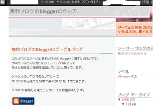

グーグルブログの作り方
アクセス解析の検索キーワードをみてみると、最近、グーグルブログの作り方で検索されることがあるようです。これはおそらく、ブロガー（blogger）のことじゃないかなと思います。
グーグルブログは無料で簡単にブログの作成ができます。
ブログのテンプレートはそれほど多いという感じではありませんが、スタイリッシュなブログをつくれるんじゃないかなと思います。
グーグルのブログでブログを作ったからといって、検索結果がよくなるというわけでもないようですが、インデックスされるスピードはかなりはやいようです。また、ユーチューブ動画やアドセンスなどグーグル特有の機能を簡単にブログにとりいれることができます。記事の入力もかなり軽めです。
ただ、ピン送信ができないようなので、ぶろっぐぴんぴんなどのソフトウェアを使うしかないようです。といってもグーグルブログの場合はピン送信しなくても、グーグルの検索ロボがマッハでやってきてくれるようです。
グーグルブログを実際に作成
無料ブログ比較というページを作成した際にグーグルブログもついでに作成してみたのですが、実際に作成してみるとこんな感じになりました。

グーグルブログのおいたちや、容量のあれこれなどを記事にしています。
ブログのテンプレートですが、ブラウザやパソコン画面の解像度の設置によって見え方に若干の違いが生じてしまうようです。
わたしの環境では横スクロールが発生してしまうようなテンプレートでも、実際に多くの方が使用されている画面解像度の 1024x768 ではきちんと表示されていたりと、なかなかテンプレート選びも難しいものだなって思います。
グーグルブログの作成はグーグルの無料ツールが簡単に使用できたり、インデックスのスピードがはやいなど多くの利点があります。
その一方で、シーサーブログにあるようなタグ検索やブログサービスに表示される新着投稿、人気ランキングなどポータルサイト的な要素がないので、アクセスを検索エンジン経由頼みになるデメリットがあったりもします。
広告の表示義務はないですが、ページ上部のナビゲーションバーは表示しておかないといけないようです。
スタイルシートが外部化していないせいか、もしくは高機能なグーグルツールを使用しているためかはわかりませんが、多少重めブログです。
- グーグルブログで独自ドメイン化
グーグルブログのbloggerでも独自ドメインが使えるようなのですが、ためしに無料ブログ比較で使用しているブログをcom.ドメイン化してみました。独自ドメインを使える無料ブログサービスはシーサーブログ... - さくらのブログの作り方
無料ブログサービスでブログを作るのも初心者簡単でいいと思いますが、サブドメインやブログの重さなど、多少物足りなさを感じてきたらさくらのブログで作成してみるものいいと思います。さくらのブログの作り方は、... - ブログサービスTwitterの検索機能
グーグルがアメリカのブログサービス Twitter を買収するとの噂ですが、このTwitterというのは、普通のブログとは多少違った感じのようで人気なんだそうです。グーグルは以前に無料ブログサービスの...